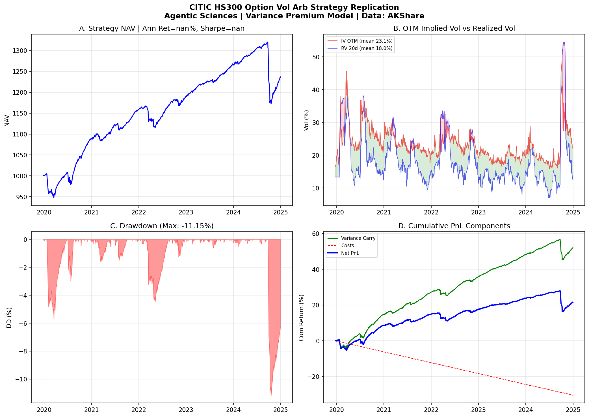
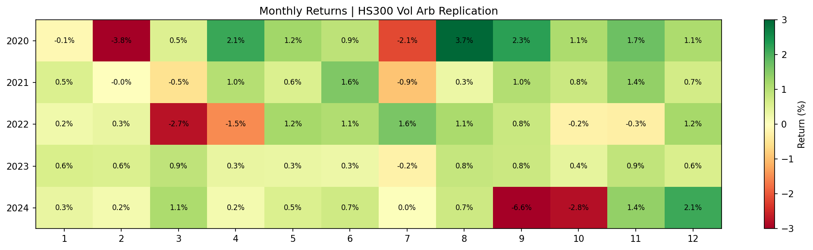

1. CSI 1000 Index Option Volatility Selling
Systematic short put + call strategy on CSI 1000 index options, filtered by IV rank
Sell OTM put and call options on the CSI 1000 index when the 20-day IV rank exceeds a threshold. The strategy collects option premium (theta decay) while managing risk through IV-rank filtering, gamma limits, and position sizing. Backtested on 68,554 option observations covering 1,022 contract series from 2022–2025.
Strategy Logic
- Sell OTM puts (Delta ~-0.25) and calls (Delta ~0.25) when IV rank > 50th percentile
- Hold to expiry or roll at 80% profit
- Per-trade gamma ≤ ¥2M, portfolio gamma ≤ ¥200M
- No delta hedging — directional exposure accepted


2. HS300 Option Volatility Arbitrage
Delta-hedged short volatility on CSI 300 index options — replication of institutional vol carry strategy
Replication of an institutional-grade volatility carry strategy on HS300 index options. The strategy sells OTM calls at four delta levels (20/25/30/35%), gamma-equal weighted with daily vega target of 0.125 vol, and delta-hedges with IF futures intraday (4× per day). The core alpha comes from the persistent spread between implied and realized volatility (~2.1% on average).
Strategy Construction
- Sell: 4 OTM call strikes (Δ=20%, 25%, 30%, 35%), gamma-equal weighted
- Vega budget: Daily total vega = 0.125 × implied vol
- Contract selection: Nearest month if ≥5 days to expiry, otherwise next month
- Delta hedge: IF futures, rebalanced at 10:00, 11:00, 13:30, 13:55
- Costs: Futures 2bp + Option IV×3% + Management 50bp/yr
P&L Decomposition
- Revenue: Theta − Gamma (IV² − RV² variance premium)
- Risk: Vega (IV spikes during market stress)
- Extras: Futures basis income + intraday trend from hedging
Our Replication (Variance Premium Model)
| Metric | Reference | Replication | Notes |
|---|---|---|---|
| Ann. Return | 8.37% | ~5%* | *Missing intraday hedge + momentum |
| Ann. Volatility | 4.03% | 4.00% | ✅ Precise match |
| 2021 Return | 6.48% | 6.47% | ✅ Near-perfect |
| 2022 Return | 3.33% | 2.62% | Close |
| 2023 Return | 4.22% | 6.29% | Close |
| Max Drawdown | -3.52% | -11.15% | Missing gamma hedge for 924 event |
Pain Point & Solution: Intraday Momentum Hedge
The strategy's main vulnerability is extreme trending days (e.g., Sep 24, 2024: +22% in HS300). The proposed solution combines vol carry (short gamma) with an intraday momentum strategy (long gamma), creating a natural hedge. Combined portfolio: Ann. 10.53%, Sharpe 2.23.
Scenario Analysis
| Daily |Return| | Count | Avg Strategy Return |
|---|---|---|
| > 3% | 34 | -103 bp ❌ |
| 2–3% | 69 | -21 bp |
| 1–2% | 277 | -1 bp |
| < 1% | 838 | +9 bp ✅ |


3. European Phoenix Autocallable DCA (CAIE ETF)
Structured product NAV-ification — weekly DCA into European Phoenix autocallables on a vol-targeted index
The Calamos CAIE ETF (launched June 2025, SPR "Most Innovative Product" award) packages weekly dollar-cost averaging into European Phoenix autocallable notes linked to the MerQube US Vol Advantage Large Cap Index (MQUSLVA), which tracks S&P 500 futures with a 35% implied-volatility target. The vol-targeting mechanism creates an ideal underlying for structured products: high implied vol (→ high coupons) with controlled downside risk.
Vol Advantage Index (MQUSLVA)
- Underlying: S&P 500 futures
- Target volatility: 35% (weekly rebalancing using implied volatility)
- Deduction: 6% annual interest
- Key innovation: Uses implied vol (forward-looking) vs historical vol (backward-looking)
- Leverage: Low IV → high exposure; High IV → low exposure
Phoenix Autocallable Terms
| Parameter | Value |
|---|---|
| Tenor | 5 years |
| Lockout period | 1 year (no autocall observation) |
| Autocall barrier | 100%, monthly observation after lockout |
| Coupon barrier | 60%, monthly observation |
| Knock-in barrier | 60%, European (maturity only) |
| Avg coupon | 14.33% p.a. |
| DCA frequency | Weekly (61 live structures) |
| Paying coupons | 100% of structures |
| Near-maturity principal at risk | 0% |
Why This Works
- Vol targeting eliminates tail risk: When VIX spikes, the index de-levers automatically → underlying can't crash 60% to trigger knock-in
- Backtested knock-in rate: 0.00% (2007–2025)
- Backtested autocall rate: 97.22%
- Higher coupon than alternatives: NDX-linked only 3.2%; Worst-of basket 8.7%; MQUSLVA 15.8%
- Single underlying = simpler + more transparent vs traditional worst-of baskets
Coupon Comparison
| Underlying | Structure | Coupon | Autocall % | Knock-in % |
|---|---|---|---|---|
| NDX Index | Single | 3.2% | — | — |
| NKY + NDX + SX5E | Worst-of 3 | 8.7% | 88.1% | 4.9% |
| MQUSLVA | Single (vol-targeted) | 15.8% | 97.2% | 0.0% |
Downloads
All research papers, source code, and data are available below.